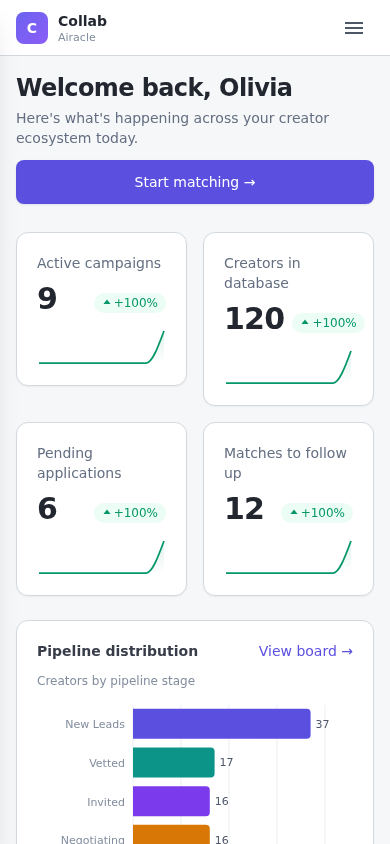

待确认也占名额
避免活动超额确认；邀请失效后再释放。
CASE 01 · COLLAB
品牌、运营和创作者跨多个渠道合作；我负责把对象、状态、规则和责任边界变成统一产品。
Brief、报价、审核和修改要求散落在 Telegram、WhatsApp、邮件与社媒私信中。团队无法稳定判断当前状态、下一步责任人和关键条件。

避免活动超额确认；邀请失效后再释放。
系统不替创作者默认接受品牌的新要求。
资格、付款和争议交给规则与人工。



近期 3 个活动、50+ 笔可观察记录中，品牌 Brief 至创作者确认参与的周期中位数由约一周缩短至半天。它证明流程重构产生效率价值，但不代表长期全量效果。
邮件、WhatsApp、合同与社媒发布仍有人工回填；不把无法证明的外部行为包装为自动化结果。